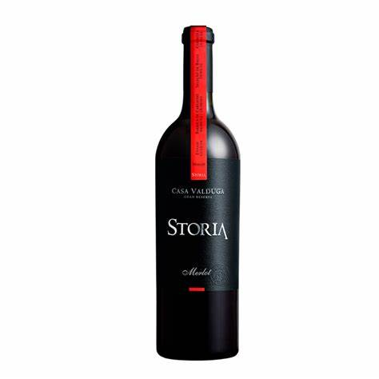
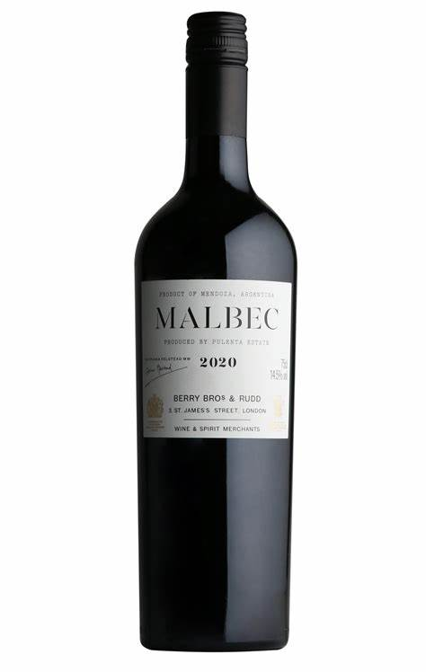
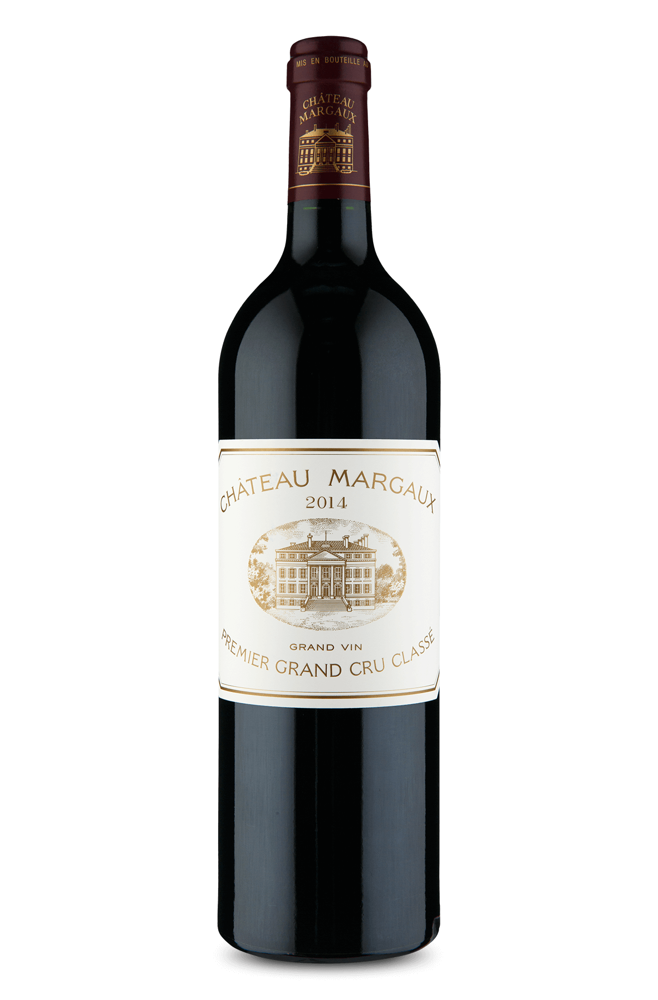
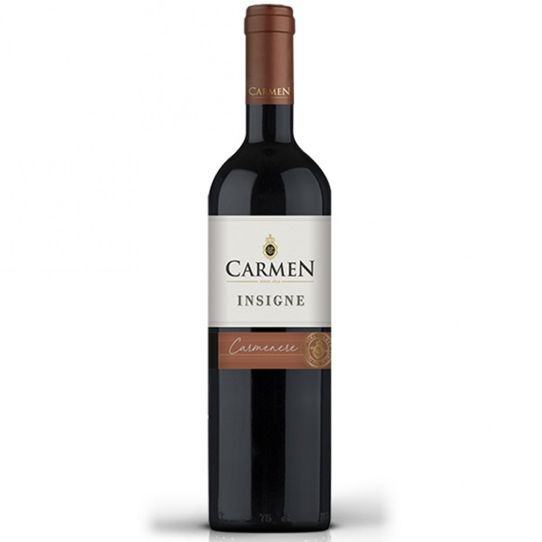

Feito a partir da fermentação do suco de uva, o vinho tinto normalmente é chamado somente de “vinho”, por ser o tipo mais famoso da bebida, enquanto os outros tipos sempre são especificados, como é o caso do vinho branco. Além de ser um dos tipos de vinho, os vinhos tintos também têm a sua própria classificação para diferenciarmos um do outro.
Os tons diferentes e mais avermelhados do vinho rosé fazem muita gente pensar que ele é feito de uma mistura entre vinho tinto e vinho branco, mas para quem entende de vinho, esse pensamento chega a ser até ofensivo. O vinho rosé é feito de uvas tintas, o que difere a sua cor é que, em um dos seus processos de produção, a casca da uva é eliminada, o que lhe garante a cor mais clara do que o vinho tinto.
Como o nome já diz, o vinho branco é aquele tipo de vinho mais claro, levemente dourado, e que lembra um pouco a champagne. Ele é feito com uvas brancas e, ao contrário do vinho tinto, o vinho branco é melhor se consumido gelado.
Feito a partir da fermentação do suco de uva, o vinho tinto normalmente é chamado somente de “vinho”, por ser o tipo mais famoso da bebida, enquanto os outros tipos sempre são especificados, como é o caso do vinho branco. Além de ser um dos tipos de vinho, os vinhos tintos também têm a sua própria classificação para diferenciarmos um do outro.
